Что такое Jupyter‑ноутбук и где он применяется
В мире Data Science Jupyter-ноутбук уже несколько лет считается одним из популярных инструментов для анализа данных и быстрого прототипирования.
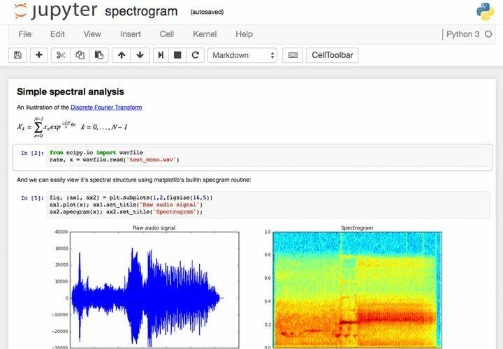
С Jupyter-ноутбуком аналитические отчёты получаются нагляднее: можно выводить вместе код, изображения, формулы, диаграммы и графики.
В Jupyter Notebook две основные части: веб-приложение и ноутбуки ― файлы, в которых работают с исходным кодом программы, запускают его и выводят данные в разных форматах. Для экспорта ноутбуков используют два формата ― PDF и HTML.
Что можно делать в веб-приложении:
● запускать и редактировать код в браузере;
● показывать результаты расчётов, используя схемы и графики;
● использовать язык разметки Markdown и LaTeX.
Один из плюсов этого инструмента в том, что код можно разделить на кусочки и работать над ними в любом порядке. Например, написать скрипт и сразу посмотреть, как он работает. Остальные фрагменты кода при этом запускать не нужно, результат появляется тут же, под частью кода. Так специалисты по Data Science выводят предварительные результаты исследований, строят графики и диаграммы.
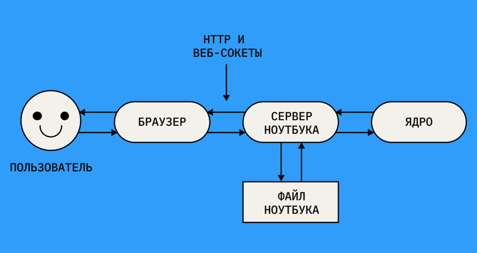
Пользователь подключается к серверу через браузер и создаёт проект, а код отправляется через сервер в ядро. Оно запускает код и отправляет результат через сервер обратно в браузер. Сервер сохраняет проект в виде файла с расширением *.ipynb.
Самый простой способ набить руку в Jupyter Notebook — использовать его как калькулятор для ежедневных задач. Например, вести в блокноте семейный бюджет, сравнивать доходы и расходы.
Чтобы установить Jupyter-ноутбук и написать первый код, специальных знаний или опыта программирования на Python не нужно. На курсах специалистов по Data Science студенты осваивают среду разработки Jupyter с нуля и решают задачи на основе данных реальных проектов.
Чаще всего с Jupyter-ноутбуками работают на Python, но другие языки программирования тоже поддерживаются, например R, Ruby, Pearl и даже JavaScript — всего около 40 языков. Устанавливать их не нужно — работать с кодом из другого ядра помогают магические команды Python. Они так и называются — magic-команды и бывают двух видов:
● строчные — начинаются с %;
● ячеечные — начинаются с %%.
Чтобы, например, перейти на Ruby, нужно ввести %%ruby.
Опытные пользователи объединяют SQL и Python внутри блокнотов Jupyter. SQL хорош для извлечения данных и работы со статистикой, а Python подключается, когда нужно эти данные проанализировать. Jupyter Notebook можно подключить к любым базам данных SQL, например MySQL, Postgres, Snowflake, MariaDB, Azure, а затем писать SQL-запросы с помощью нескольких строк кода.
Jupyter-ноутбук можно запустить двумя способами: локально и в облаке.
Установка на локальный компьютер займёт больше времени, но код будет работать быстрее. Допустим, у пользователя Windows 10 или 11. Для начала нужно загрузить с официального сайта и установить Python 3.3 или более новую версию.
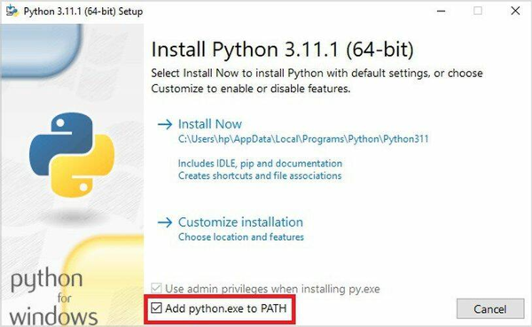
Перед установкой Python нужно поставить галочку в самом низу окна установки — без этого не получится работать с ним в командной строке.
После этого нужно перейти в командную строку и установить сам ноутбук. В этом поможет специальная утилита — pip. С помощью неё можно распаковать, установить или обновить программы, в том числе и Jupyter. Утилита загружается на компьютер вместе с Python. Чтобы установить ноутбук, надо ввести команду:
pip install notebook
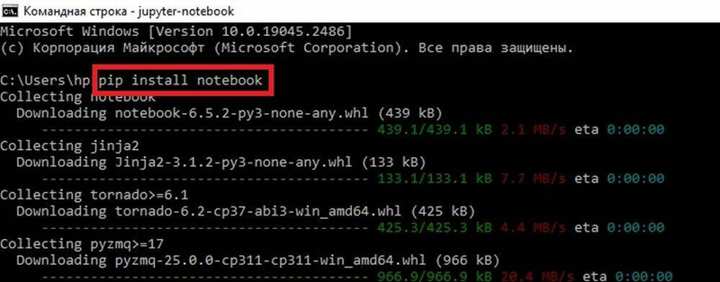
После запуска команды pip install notebook начнут загружаться файлы Jupyter — это займёт 1–2 минуты.
Если выводится сообщение Successfully installed, то Jupyter-ноутбук готов к запуску. Чтобы начать работу, используют команду jupyter notebook.
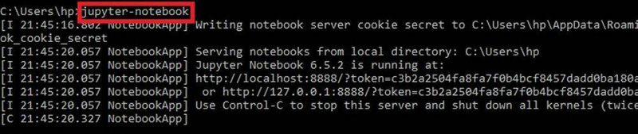
Через пару секунд после ввода команды автоматически откроется браузер с интерфейсом ноутбука. Среда для разработки готова. Можно кодить.
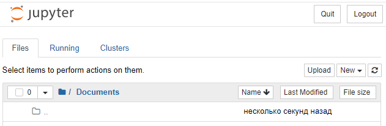
Интерфейс ноутбука открывается прямо в браузере
Этот вариант установки подойдёт начинающим. Для опытных специалистов есть альтернативный способ установить Jupyter-ноутбук на компьютер — загрузить Anaconda. Это дистрибутив Python и репозиторий файлов, который используют в основном для анализа данных и машинного обучения. Jupyter Notebook и его расширение JupyterLab как раз входят в этот дистрибутив.
В облаке ноутбук работает медленнее, зато можно сразу садиться и кодить. Одна из облачных версий Jupyter Notebook — программа Google Colab. Её часто используют в учебных программах по машинному обучению. Она работает в любом браузере и не требует специальных настроек.
Разберём несколько задач, которые помогут разобраться в работе с Jupyter Notebook.
Чтобы начать новый проект, нужно запустить Jupyter-ноутбук и создать папку для проектов. Затем нажать New в правой части экрана и выбрать в списке меню Folder.
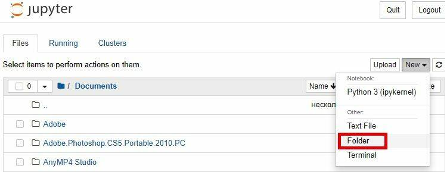
Новая папка автоматически будет названа Untitled folder. Чтобы назвать её по-другому, нужно поставить галочку напротив имени и нажать Rename.
Чтобы создать ноутбук, нужно снова использовать New и выбрать Python 3.
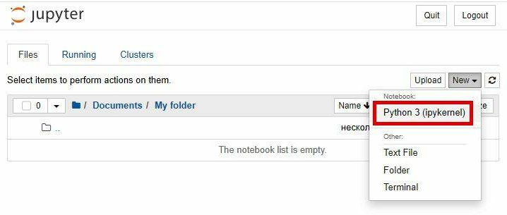
Чтобы подготовить ноутбук к работе, нужно выбрать Python 3 в выпадающем списке.
Теперь можно перейти на следующий уровень и попробовать решить простую задачу — сложить 3 и 4.
Для этого нужно выставить свойство Code, ввести в ячейке 3 + 4 и нажать Ctrl + Enter или Shift + Enter. В первом случае введённый код выполнит интерпретатор Python, во втором ― будет выполнен код и появится ещё одна ячейка. Чтобы запустить код в облачной версии Jupyter, достаточно нажать Run → Run Selected Cells.
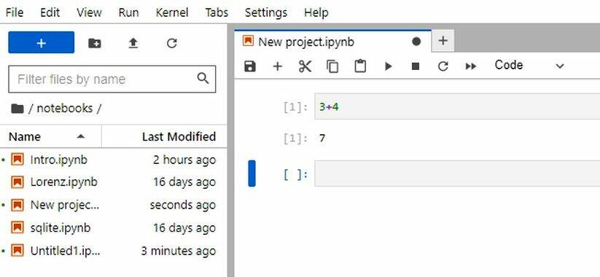
Теперь можно использовать ноутбук как калькулятор. Если получилось решить первый пример, можно потренироваться на других.
Попробуем решить задачу посложнее — нарисовать график. Если ноутбук только установили, графики не получится вывести в его рабочее поле. Чтобы они отображались, нужны библиотеки pandas и Matplotlib. pandas используют для анализа данных в форме таблиц, а Matplotlib помогает строить графики и диаграммы.
Добавить библиотеки можно с помощью команд в ячейке:
!pip install pandas
!pip install matplotlib
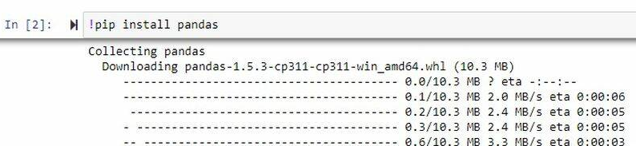
Установка pandas займёт около минуты.
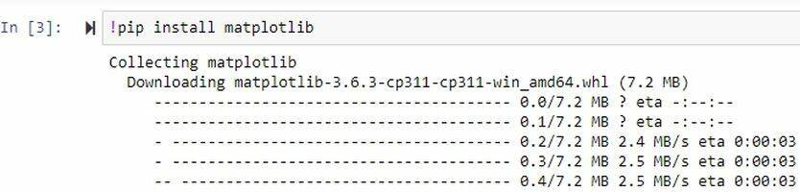
Процесс установки Matplotlib ничем не отличается.
На новой странице Jupyter нужно запустить код для простого линейного графика:
import matplotlib.pyplot as plt
x=[1,2,3,4,5,6,7,8]
y=[2,4,6,8,10,12,14,16]
plt.plot(x,y)
plt.show()
Первая строка импортирует graphing-библиотеки pyplot из Matplotlib API. Третья и четвёртая строки — оси x и y. Чтобы построить график, нужно вызвать метод plot(), а для отображения — метод show().
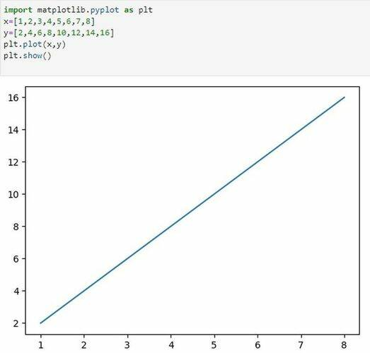
Вот так в ноутбуке выглядит линейный график
Чтобы из прямой сделать кривую, нужно подставить другие значения для оси y:
import matplotlib.pyplot as plt
x=[3,4,5,6,7,8,9,10,11,12]
y= [9,16,25,36,49,64,81,100,121,144]
plt.plot(x,y)
plt.show()
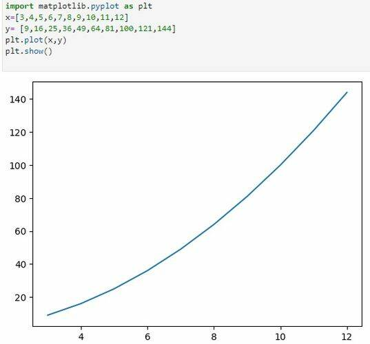
Кривую в Jupyter Notebook строить не сложнее, чем прямую, —
достаточно изменить значения оси
Удобство библиотеки Matplotlib в том, что шкала рассчитывается и применяется автоматически. Количество значений для осей x и y одинаково. Если одно из них меньше другого, при запуске кода появится ошибка, а график не отобразится.
Matplotlib подходит не только для графиков, но и для диаграмм. Здесь используется figsize — метод, который позволяет менять размеры графика. Все размеры в графиках на Jupyter-ноутбуке настраивает библиотека, поэтому визуализировать данные в нужном формате бывает сложно. Метод figsize пригодится, когда нужно, например, сделать какую-нибудь фигуру больше или меньше, изменив соотношение сторон. Официальные документы pandas советуют использовать соотношение сторон 1, но можно устанавливать любые. Например, чтобы построить диаграмму:
import matplotlib.pyplot as plt
x=[3,5,10,26,32]
fig = plt.figure(figsize =(9, 5)) # line 4
plt.pie(x)
plt.show()
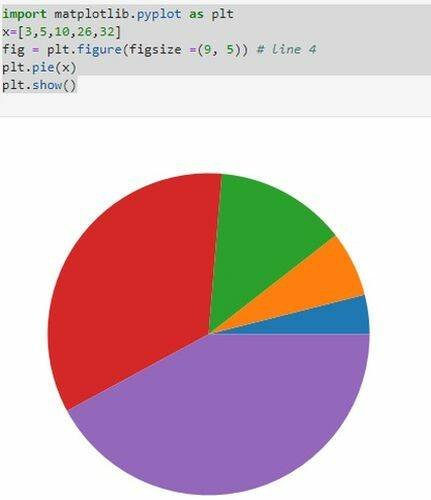
Чтобы построить круговую диаграмму,
нужно использовать метод figsize
У круговой диаграммы есть два основных параметра — цвета и метки. Цвета нужны, чтобы окрашивать фрагменты диаграммы. Можно сделать это с помощью текста и прямо написать «фиолетовый» или использовать шестнадцатеричную форму (например, #7554E2). Метки используют, чтобы подписывать части диаграммы. Указание обоих параметров поможет обновить предыдущую диаграмму:
import matplotlib.pyplot as plt
x=[4,9,16,25,36]
fig = plt.figure(figsize =(9, 5))
plt.pie(x, labels=("Hello", "Darkness","My","Old", "Friend"),
colors = ( "#30D5C8", "#2F35E9", "#D220CD", "#E7FF12", "#2E7B80"))
plt.show()
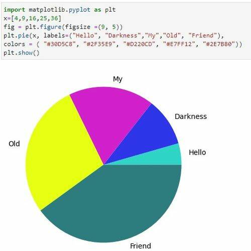
Изменили цвета, добавили подписи —
теперь круговая диаграмма выглядит как надо
1. Установить расширения для ноутбука.
По умолчанию в блокноте Jupyter нет многих функций, с которыми работать будет в разы быстрее. Но исправить это просто.
Чтобы установить расширения, нужно выполнить код в командной строке или терминале:
pip install jupyter_contrib_nbextensions
Затем запустить код, чтобы добавить файлы nbextensions в каталог поиска сервера Jupyter:
jupyter contrib nbextension install
В ноутбуке должна отобразиться вкладка с названием Nbextensions. Если на неё нажать, появится список расширений. Например, ярлыки для запуска нескольких ячеек, перемещение ячейки, поиск файла, автозаполнение.
Каждый раз импортировать популярные модули вроде pandas и Matplotlib или запоминать новые — это трата времени. Решить эти проблемы помогает расширение Snippets. Оно выглядит как ещё одно меню, а внутри — документация к библиотеке и доступные функции.
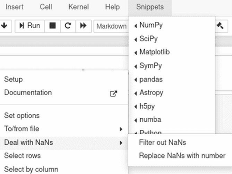
Расширение Snippets в интерфейсе Jupyter-ноутбука
может серьёзно облегчить жизнь новичков в Data Science
2. Использовать не только Google Colab.
Есть много способов запустить Jupyter-notebook в облаке. Например, бесплатный аналог Google Colaboratory — Kaggle Kernels. Пользовательский интерфейс такого ноутбука отличается от оригинального Jupyter, зато в нём предустановлены различные пакеты для Data Science. Отличный вариант для тех, кто только осваивает машинное обучение и хочет соревноваться с другими студентами. Соревнования по этому направлению проводят на сайте Kaggle.
JupyterLite — ноутбук, который работает полностью в браузере. Подходит для студентов и преподавателей, например, когда нужно сделать очень простую визуализацию, а времени на установку библиотек нет.
Deepnote — версия Jupyter Notebook для команд. Работает примерно как гугл-документы: редактировать проект можно в режиме реального времени. При этом можно заводить и личные блокноты. У Deepnote есть много разных функций: планирование, преобразование ноутбука в приложение, создание диаграмм и многие другие. Есть интеграция с GitHub, PostgreSQL, BigQuery, Redshift и другими.
Ещё один вариант ноутбука — Mercury. Он превращает Python notebook в интерактивное веб-приложение, в котором можно скрыть код и отображать только виджеты.
В Jupyter-блокноте можно запускать разные куски кода в любой последовательности. Это удобно, но скорее для опытных пользователей. В левой части экрана ноутбука есть порядок запуска ячеек, и новички часто про него забывают. В итоге ячейки расположены в произвольном порядке и код работает с ошибками, а иногда вообще непонятно, что он делает. Как минимум каждый блокнот должен содержать понятное название, краткое вступление, описание и заключение. Ячейки важно расположить в порядке запуска. Перед тем как публиковать блокнот, нужно убедиться, что код выполняется без ошибок.